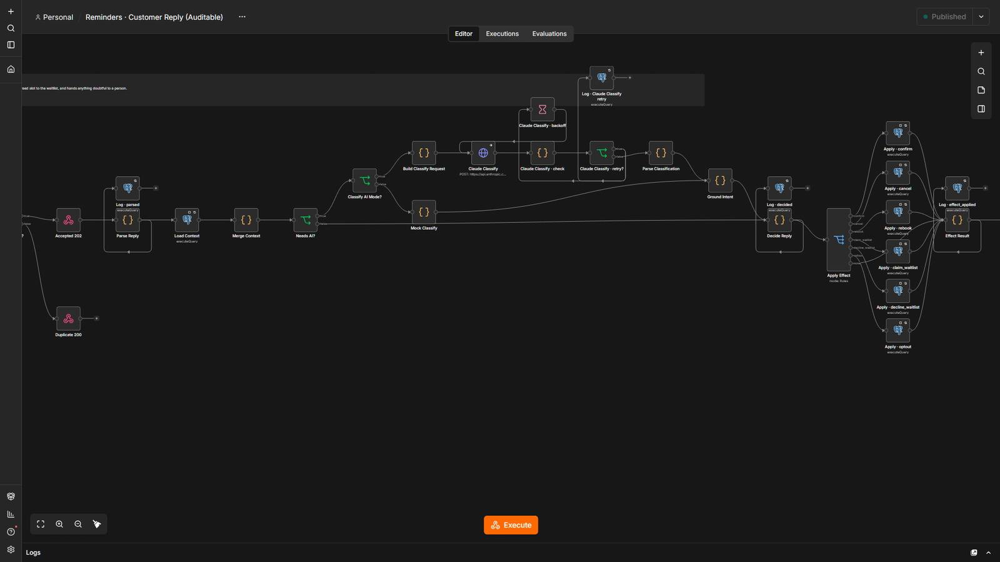
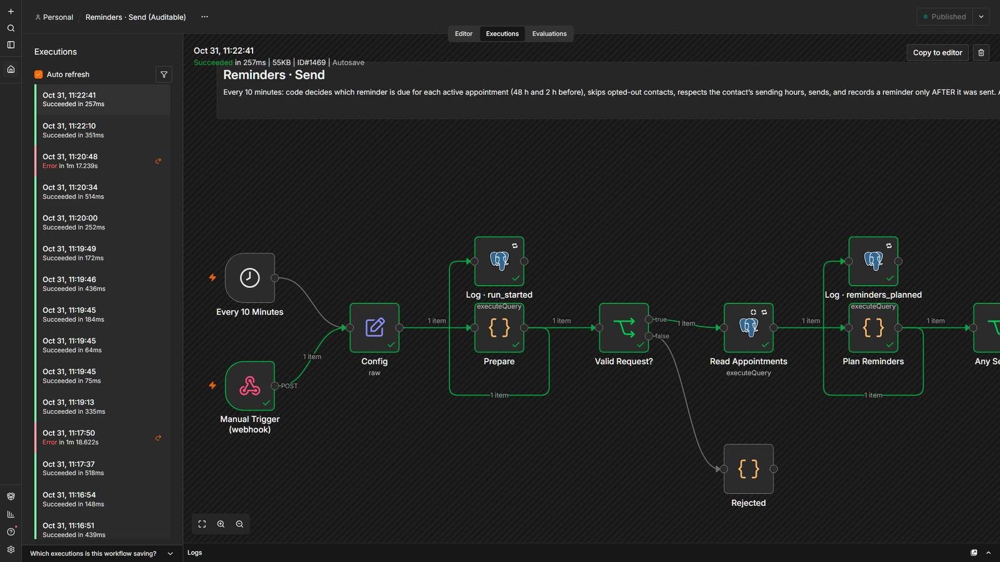
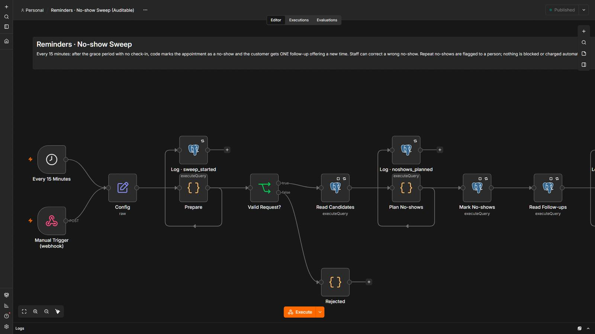

Fewer no-shows, without your team chasing every appointment.
Reminders go out 48 hours and 2 hours before each appointment. Customers reply 1, 2 or 3 and code handles it with no AI: confirm, reschedule into a real free slot, or cancel and offer the freed slot to the waitlist. People who do not show up get one follow-up, and repeat no-shows are flagged to a person.
5 steps, and who decides each one.
- Code decides
Decide what is due
Reminders 48 h and 2 h before, only for active appointments, once each, inside the contact’s sending hours.
- Code decides
Send, then record
A reminder is recorded only after it was sent. A failed send retries next run and fails loudly.
- Code decidesAI reads
Read the reply
“1”, “2”, “3” and STOP are read by code. Only free text reaches the AI, which classifies the intent with its evidence.
- Code decides
Rebook without double booking
A new time is claimed only if it is still free and the old one is released. A freed slot is offered to the waitlist.
- A person
Catch the exceptions
No-shows get one follow-up. Repeat no-shows and anything doubtful go to a person; nothing is blocked or charged automatically.
4 workflows
Reminders · Send
Every 10 minutes it decides which appointment reminders are due (48 h and 2 h before) and sends them, respecting opt-outs and each contact’s sending hours.
Step by step
- Reads active appointments for the next 49 hours, their contacts, the opt-out list and the reminders already recorded.
- Code decides what is due: 48 h reminders between 48 and 24 hours before, 2 h reminders between 2 hours and 30 minutes before, once each.
- Outside the contact’s sending hours a reminder is deferred; if there will be no later chance it is recorded as skipped with the reason.
- Sends the SMS (an email to a test inbox locally) and records a reminder only after it was sent.
- Leaves each contact "waiting for a reply" so 1, 2 or 3 can be understood.
Reminders · Customer Reply
Reads a customer’s reply, applies the effect (confirm, cancel, reschedule or waitlist) in one atomic step, answers them and hands anything doubtful to a person.
Step by step
- Opt-out words are handled first; each message id runs once.
- Code reads "1 / 2 / 3", yes, cancel and reschedule. Only free text goes to the AI, which classifies the intent with its evidence and a confidence.
- Code decides the effect from what the conversation was waiting for; injection, a failed AI or low confidence goes to a person.
- One atomic statement per effect: confirm, cancel (frees the slot), rebook (claims the new slot only if still free, links a new appointment, releases the old one), waitlist claim or decline, opt-out.
- Answers the customer, offers a freed slot to the first person on the waitlist, and records everything after sending.
Reminders · No-show Sweep
Every 15 minutes it marks appointments nobody attended and sends one follow-up offering a new time; repeat no-shows are flagged to a person.
Step by step
- Reads active appointments that already started and have no check-in.
- Code applies the grace period (15 minutes) and the follow-up window (48 hours).
- Marks no-show only if the appointment is still active and without check-in at that instant.
- One follow-up per appointment, respecting opt-outs, channel and sending hours.
- Two or more no-shows in 90 days alert a person once; nothing is blocked or charged automatically.
Reminders · Staff Update
Lets staff record check-in, attended, cancel or a manual no-show, with who and when.
Step by step
- Validates the action and who did it.
- Code decides the outcome: repeating an action changes nothing, a wrong no-show can be corrected as attended, a closed appointment is not touched.
- Writes the change, the audit event and, when cancelling, frees the slot, in one statement guarded by a version number.
The system in n8n.
Screenshots of the actual editor and of a real execution, from the local test environment. Click one to open it full size.





